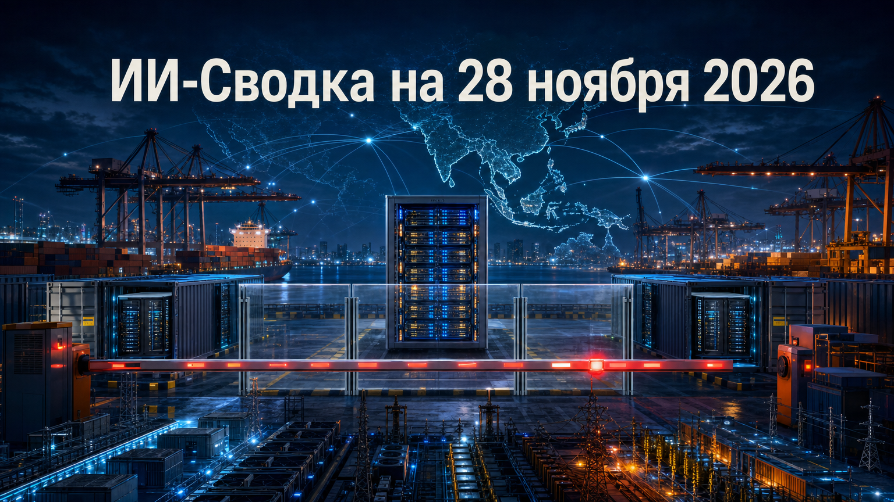

Новостей сегодня меньше, чем обычно
Экспортный контроль всё заметнее влияет не только на прямые поставки ускорителей, но и на планы облачных операторов в третьих странах. Свежий сигнал из Юго-Восточной Азии показывает, что проверка конечного использования вычислительных мощностей становится инфраструктурным ограничением.
Для компаний, строящих или арендующих ИИ-вычисления в регионе, важны не только доступность GPU и цена электроэнергии, но и подтверждаемая цепочка клиентов, доступов и назначения мощностей.
Tom's Hardware со ссылкой на Financial Times сообщает, что производители серверов, включая Dell и Supermicro, уведомили клиентов о приостановке поставок систем с GPU NVIDIA в Сингапур, Таиланд, Малайзию и Индонезию. По данным публикации, мера связана с новыми требованиями США: облачные провайдеры должны получать экспортные лицензии и подтверждать, что не обслуживают ограниченных клиентов.
Это пока не официальное подтверждение NVIDIA или Министерства торговли США, поэтому речь идёт о сообщаемом операционном эффекте экспортных правил, а не о публично объявленном запрете компании. Однако возможная пауза важна для рынка: она способна задержать ввод новых ИИ-кластеров, повысить стоимость финансирования региональных дата-центров и заставить облачных операторов жёстче контролировать конечных пользователей вычислений. После внесения связанных с Megaspeed структур в американский Entity List контроль смещается от отдельных посредников к более широкому надзору за облачной инфраструктурой и маршрутами доступа к ней.
📲 Подписывайтесь: tg 🔹 max 🔹 vk